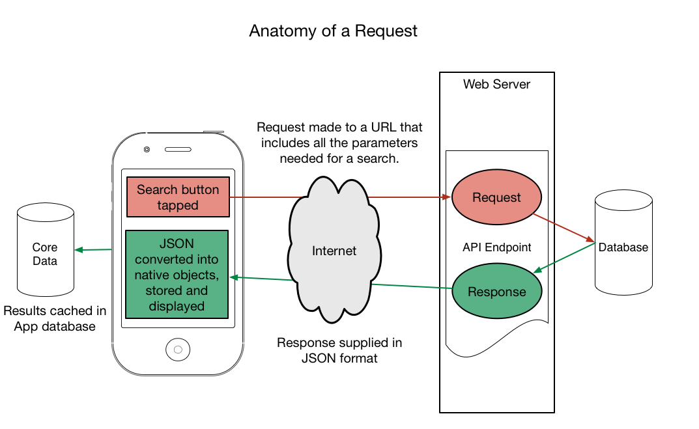

Anatomy of a Request
I was asked to provide an simple explanation of how an iPhone App interacts with, and retrieves data from, a web service, such as we use at Hotels.com. It seems to have been really helpful for some non-technical people here, and so I thought is might be helpful for others. Created on my journey home one day, using OmniGraffle for iPad.
